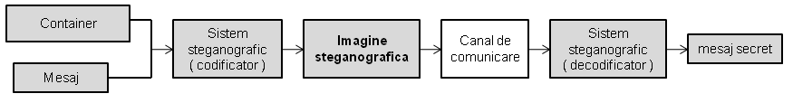

Data publicării: 27.04.2017
Autor articol: Anca Ignat
Marcarea digitală a imaginilor folosind bitul cel mai puțin semnificativ
De-a lungul timpului au fost propuse diferite metode pentru ascunderea informațiilor din care majoritatea se bazează pe substituția părților redundante a unei imagini cu mesajul secret [1],[2]. În funcție de modalitatea în care se ascunde informația, aceste tehnici lucrează în două domenii:
Domeniul spațial – această tehnică ascunde informația direct în valoarea unui pixel. Mai este numită și tehnica adăugării de zgomot. Se folosesc de obicei imaginii în format BMP sau PNG datorită compresiei lossless.
Domeniul frecvențial – metodă mai robustă de a ascunde informații prin care aceasta se codifică în zonele de intensitate predominantă a unei imagini.
Steganografia” este un cuvânt provenit din combinația celor două cuvinte grecești „steganos” (ascuns) și „graphein” (scris). Pentru introducerea unui mesaj secret în imagini este nevoie în primul rând de o imagine container în care se va înmagazina informația dorită și de un mesaj. Folosind diverși algoritmi, se combină cele două entități și reiese o imagine steganografică care va conține mesajul secret. Această imagine va ajunge la destinație printr-un canal de comunicare și cu ajutorul unui decodificator se va obtine informația ascunsă. Pașii pe care îi urmeaza sunt exemplificați și mai jos în Fig. 1.

Cel mai nesemnificativ bit (LSB – Least significant bit)
Este cel mai folosit algoritm de ascundere a mesajelor în imagini. Implică schimbarea unuia sau a mai multor biți din valoarea unui pixel [1],[3],[4],[5],[6]. Acești biți sunt cei mai puțini semnificativi, cu alte cuvinte, schimbarea lor va avea un impact minim asupra imaginii și modificările aduse în urma codificării mesajului nu vor putea fi vizibile de către om.
Ascundere Oarbă (BlindHide)
Cea mai simplă metodă de a ascunde informații într-o imagine. Poartă această denumire deoarece ascunde orbește, începând cu pixelul din stânga-sus a imaginii și deplasându-se de sus în jos și de la stânga la dreapta. Pentru fiecare pixel parcurs, ascunde câte un bit din mesaj în bitul cel mai nesemnificativ din reprezentarea fiecărei culori primare a pixelului.
Algoritmul este foarte ușor de implementat. Se încarcă imaginea în memorie și se parcurge pixel cu pixel pentru a construi 3 vectori bidimensionali pentru fiecare culoare primară Apoi se parcurge mesajul bit cu bit începând cu primul caracter și cu poziția 0 a bitului a cărui valoare se va introduce în cel mai nesemnificativ bit din valoarea Red, valoarea de pe poziția 1 în cel mai nesemnificativ bit din valoarea Green și așa mai departe până nu mai rămân biți neparcurși în mesaj. Deși imaginea nu se deteriorează vizibil după codificare, această metodă oferă un nivel de securitate foarte redus.
Se observă că această metodă nu este foarte sigură și că se poate afla mesajul foarte ușor.
Filtrarea pixelilor pseudorandom ( LSB – Pseudorandom Pixel Filter )
O îmbunătățire adusă algoritmului BlindHide care mărește securitatea este selectarea pixelilor în care urmează a fi ascuns mesajul. Pentru selectare putem folosi secvențe de numere generate pseudorandom. Se poate insera o cheie in generatorul de numere aleatoare care să determine secvența de numere generate, secvență care indică pozițiile unde va fi ascuns mesajul.Acest tip de abordare face ca ascunderea informației să fie mai eficientă, eventualului atacator, dacă nu cunoaște cheia secretă, îi va fi mult mai dificil de a recupera mesajul secret.
În momentul decodificării imaginii steganografice, dacă se va folosi aceeași cheie ca la codificare se va genera aceeași secvență de numere pseudorandom și apoi se vor extrage din pixelii cu coordonatele respective fiecare bit din mesaj.
Cei mai nesemnificativi trei biți din albastru ( LS 3 Blue Bits )
După cum se observă din algoritmul anterior, diferențele aduse de schimbarea celui mai nesemnificativ bit pentru fiecare valoare R,G,B a unui pixel nu este vizibilă. Cu toate acestea, imaginea suferă o deformare semnificativă. O îmbunătățire adusă care minimizează transformarea pixelilor este „Least significants 3 blue bits”. După cum sugerează și numele, cei mai nesimnificativi 3 biți din valoarea Blue a unui pixel vor ascunde 3 biți din mesajul care se ascunde.
Robustețea algoritmilor LSB
Folosind acești 3 algoritmi pe formate de imagine BMP și PNG, datorită compresiei reduse, mesajul ascuns se păstrează și la următoarea încărcare a imaginii. În schimb pentru formatul JPEG, aceste informații ascunse se pierd din cauza compresiei lossy.
Se poate observa că, deși imaginile nu suferă modificări vizibile, acestea sunt foarte sensibile la atacuri dacă se folosește unul din cei 3 algoritmi descriși mai sus pentru ascunderea informației. Cele mai mici modificări aduse, cum ar fi încețoșarea, schimbarea luminozității sau adăugarea de zgomot, schimbă valorile pixelilor și în cele mai multe cazuri mesajul ascuns în cei mai nesemnificativi biți se pierde. Pentru ca imaginea steganografică să fie mai robustă se poate diminua calitatea și se poate mări riscul ca imaginea să trezească suspiciuni, înmagazinând biții mesajului în poziții mai semnificative a reprezentării pixelilor. S-a putut observa că ascunderea biților în pozițiile cele mai semnificative sporesc rezistența la eventualele modificări aduse, dar de asemenea, și modificările sunt vizibile.
Marcarea perceptuală a imaginilor
În ultimii zeci de ani,creșterea numărului de imagini digitale vehiculate pe Internet, a dus la nevoia protejării acestora din punctul de vedere al drepturilor de autor. Prin urmare, marcarea digitală a imaginilor este un subiect intens studiat în prelucrarea imaginilor digitale. Un mod de a le marca se bazează pe marcaje perceptuale care sunt proiectate spre a exploata modul de funcționare a sistemului vizual uman (HVS) [7],[8].
Vom descrie în continuare marcaje invizibile care sunt proiectate sa folosească informația perceptuală care se bazează pe modele ale siztemului visual uman. Marcajele perceptuale se bazează pe trei mari principia:
Transparența – marcajul nu este vizibil în imagine în condiții obișnuite de percepere vizuală
Robustețea la atacuri – mesajul incorporate poate fi detectat și după ce imaginea a suportat transformări liniare sau neliniare (cum ar fi compresia, filtarerea, transformările geometrice, selecția, etc.)
Capacitatea – tehnica de marcare a imaginii trebuie să permit inserarea unor marcaje multiple în imagine, astfel ca fiecare marcaj să poată fi verificat independent.
Modele vizuale
Modelele perceptuale ne permit să folosim caracteristicle sistemului vizual uman astef încât să eliminăm informația irelevantă sau redundantă pentru a proiecta algoritmi de compresie optimali.
Praguri pentru diferențele abia-observabile
În contextului codării imaginilor au fost studiate următoarele caracteristici: senzitivitatea la frecvență, sensitivitatea la luminanța și măstile de contrast. Studiul senzitivității la frecvență a dus la descrierea unei funcții de transfer modular (Modulation Transfer Function) care studiază senzitivitatea ochiului uman la unde sinusoidale de diferite frecvențe. Folosind un asemenea model, este posibil sa se determine un prag static de diferențe abia observabile (JND, just noticeable difference) pentru fiecare bandă de frecvență. Aceste praguri pot fi folosite atât pentru eșantionare cât și pentru alocarea biților. Senzitivitatea la frecvențe depinde doar de condițiile de vizibilitate și este independent de conținut.
Modelul se poate extinde luând în considerație senzitivitatea la luminanță, adică gradul de detecție a zgomotului pe un fundal constant.
Un model mai dinamic care să controleze procesul de eșantionare ar trebui să ia în considerare și masca de contrast, adică proprietatea de discernere a unui semnal în prezența altui semnal.
Marcarea perceptuală a imaginilor digitale
Există două modalităti de bază de marcare: tehnici în domeniul spațial (marcaje spațiale) și cele în domeniul frecvențial (marcaje spectrale). Marcajele spațiale sunt ușor de inclus în imagine, sunt invizibile,, dar nu sunt robuste. Marcajele frecvențiale presupun aplicarea unei transformate asupra imaginii și marcajul este inclus în coeficienții transformatei calculate.
Dintre marcajele perceptuale care se bazează pe criteriu transparenței sunt:
Tehnica “checksum” (un tip special de funcție hash care reprezintă rezultatul modulo 2 a adunării unor cuvinte binare de lungime fixă) în care un cuvânt este obținut prin concatenarea a șapte cei mai semnificativi biți a opt pixeli consecutivi. Fiecare pixel este implicat o singura data in checksum (are 56 biti). Se aleg apoi aleator pozitiile pixelilor care vor memora checksum-ul.
Abordarea “întiderii spectrului” (spread spectrum) – presupune folosirea ideilor de la trimiterea semnalului de bandă îngustă printr-un canal cu zgomot, dar de bandă mai mare astfel ca energia semnalului să nu poate fi detectată.
Impărțirea semnalului în două submulțimi, folosind o partiție semi-aleatoare S, una din submulțimi find alterată ușor (fără a modifica percepția vizuală a imaginii) cu un termen k (S, si k reprezintă marcajele). Un alt mod de a marca ține cont de modul diferit al oamenilor de a percepe culorile.
Marcaje perceptuale care se bazează pe senzitivitatea la frecvență:
Marcaj “spread spectrum” inclus in domeniul transformate cosinus discrete (DCT)
Combinație liniară de imagini marcate și nemarcate
Alte tipuri de marcaje care folosesc DCT
Tehnici adaptive de marcare:
Folosesc coeficienții DCT obținuți pe blocuri pentru marcaj
Utilizarea transformatei wavelet adaptive
Un rol important în tehnicile adaptive este calcularea matricii diferențelor abia observabile (JND) care se bazează pe reprezentarea frecvențială a imaginii. În matricea respective se calculează praguri care nu trebuiesc depășite pentru a păstra integritatea vizuală a imaginii.
S-a constatat că thnicile adaptive au o buna tobustețe, făcând față atacurilor de tip compresie jpeg, redimensionare și selecție. De asemenea s-a constatat că pentru tehnicile adaptive, e mai bine să fie incluse marcaje cât mai lungi (având grijă la restricția legată de transparență).
Tehnicile adaptive de marcare pot fi extinse pentru a fi folosite pentru marcajele video.
Referințe bibliografice
- Shih, F. Y. (2007). Digital watermarking and steganography: fundamentals and techniques. CRC Press.
- Cox, I., Miller, M., Bloom, J., Fridrich, J., & Kalker, T. (2007). Digital watermarking and steganography.2nd ed., Morgan Kaufmann.
- Haskins, J.(March 2016). The Art of Steganography: Watermarking through the Least Significant Bit, http://www.linkedin.com/pulse/art-steganography-watermarking-through-least-bit-josh-haskins
- Fu-an, Z. (2015). A Robust Watermarking Scheme Based on Least Significant Bit and Discrete Cosine Transform. International Journal of Security and Its Applications, 9(4), 175-184.
- Kaur, G., & Kaur, K. (2013). Image Watermarking Using LSB (Least Significant Bit). International Journal of Advanced Research in Computer Science and Software Engineering, 3(4).
- Gupta, S., Goyal, A., & Bhushan, B. (2012). Information hiding using least significant bit steganography and cryptography. International Journal of Modern Education and Computer Science, 4(6), 27.
- Wolfgang, R. B., Podilchuk, C. I., & Delp, E. J. (1999). Perceptual watermarks for digital images and video. Proceedings of the IEEE, 87(7), 1108-1126.
- Nguyen, P. B., Beghdadi, A., & Luong, M. (2013). Perceptual watermarking using a new Just-Noticeable-Difference model. Signal Processing: Image Communication, 28(10), 1506-1525.